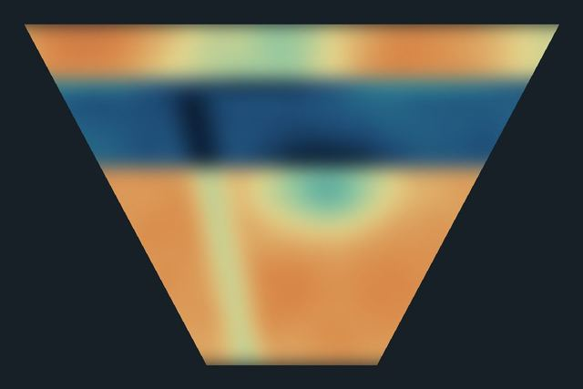

Resistivity meter
Injects current through one pair of electrodes and measures the potential difference at others, building electrical resistivity sections of the subsurface.
- Method
- Electrical resistivity
- Measures
- Apparent resistivity of the subsurface
- Platform
- Ground, with electrodes
- Typical use
- Groundwater, dams, contamination, shallow geology
In development
Keep me posted